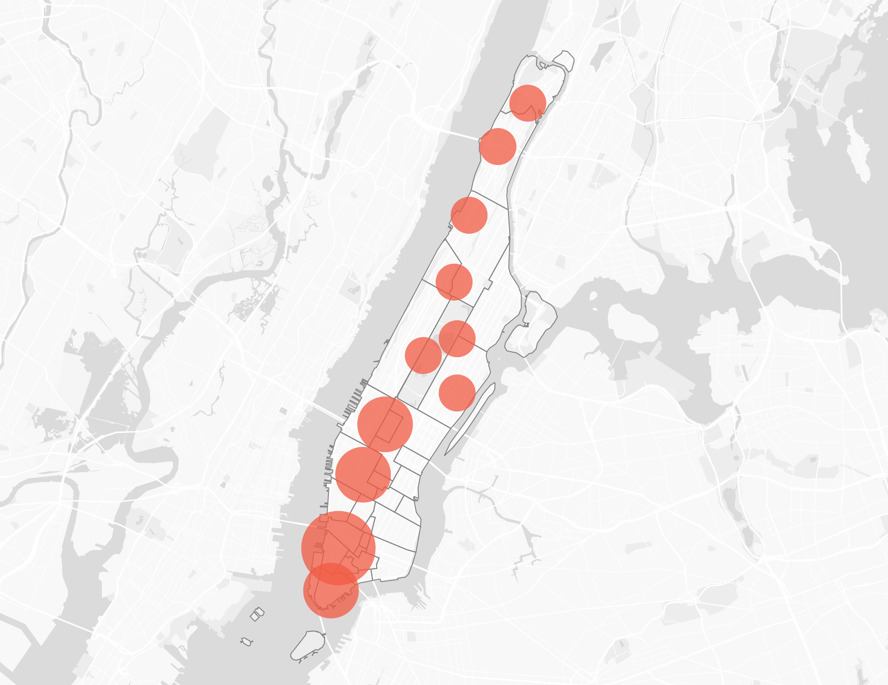

Case Study:UX/UI DesignerData StorytellerData AnalystInteractive VisualizationD3.js
Role: UX/UI Designer, Data Storyteller, Data Analyst
Year: 2023
“A scrollytelling exploration of New York City’s bike-sharing system — revealing how people move, connect, and experience the city through Citibike data.”
The Citibike Manhattan Exploration is a data-driven storytelling project that visualizes thousands of daily bike trips across New York City. Using the Citibike API and D3.js for visualization, the project transforms raw trip data into engaging narratives about urban mobility, sustainability, and community connection.
Citibike is widely regarded as one of the primary public transportation choices that many New Yorkers rely on for their daily commutes. Its convenience and availability have made it a popular and practical mode of transportation, especially for short trips within the city. This project is based on trip data collected between January and October 2023, offering a detailed snapshot of how people used the service during that period.
Instead of showing charts in isolation, the project weaves them into a narrative that compares bike usage density with urban form — looking at where stations are placed, how often they are used, and how this relates to the type, age and height of Manhattan’s buildings. By connecting infrastructure with urban development, the story reveals how neighborhoods evolve and how the built environment shapes mobility choices.
Process & Sketches
To plan the scrollytelling sequence, I sketched the relationship between Citibike usage and Manhattan’s architecture.
These early drafts helped me imagine how the data layers — bike density, station distribution, building age, type and height —
could be visualized together to tell a coherent story about movement and space.
Sketch 1
Illustrates the 8 types of buildings in Manhattan using a Bubble Chart to show distribution, a Dot Density Map to represent density, and a Color Legend to distinguish building types.
Sketch 2Uses a Dot Density Map to show the distribution and locations of Citibike stations in Manhattan.
Sketch 3
Applies a Heat Map to show the proportions of buildings in Manhattan, categorized by type, age, and height.
Sketch 4
Represents the distance between stations in relation to the types, ages, and heights of buildings in Manhattan.
Sketch 5
Shows the types of bikes—electric and classic—used in trips taken by users.
Sketch 6
Compares the types of users—members and day-pass users—who use Citibike.
Sketch 7
Highlights the popularity of stations in Manhattan and compares them with station zones using NYC building data.
Visual Storytelling
The project combines multiple visualization techniques to make complex urban mobility patterns easy to read and engaging.
Each chart type was carefully chosen to match the kind of story being told:
Filtering of informationFiltering the data of the building in Manhattan to compare with the data of the citibike station in Manhattan.
Station Popularity MapsBubble Chart to show the popularity proportion of using bike in each the stations in Manhattan.
Station Distribution MapsDot Density Map to show the density of the citibike station in Manhattan.
Proportion of the building in ManhattanPie Chart to show the proportion of the building by type, age and height in Manhattan.
Dot Density Heat MapDot Density Heat Map to show the density of the building in Manhattan.
The result is an exploration that doesn’t just visualize bike trips, but situates them in the fabric of the city.
By linking mobility patterns with the built environment, the project demonstrates how design, infrastructure, and human
behavior intersect — offering insights for policymakers, designers, and anyone curious about how New York moves.